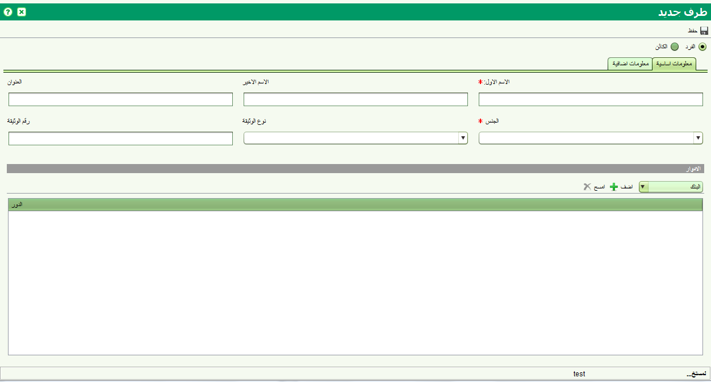

تسمح شاشة تفاصيل الطرف بإضافة طرف جديد او تعديل بيانات طرف موجود. يتم استدعاء هذه الشاشة من قبل وظائف متعددة في النظام ومن ضمنها شاشة البحث عن طرف

يمكن اضافة التفاصيل لطرف من نوع (مؤسسة , مجموعة, شركة ) او فرد. البيانات الأساسية المطلوبة تشمل اسم الطرف والمعلومات الإضافية والتي يمكن إدخالها من الشاشة الضمنية "المعلومات الاضافية"
عند الانتهاء من ادخال بيانات الطرف أنقر زر حفظ & اغلاق ليتم اضافة او تعديل الطرف
انظر أيضا